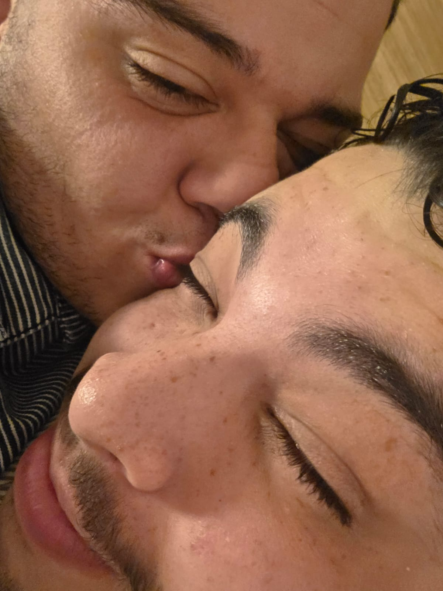

NÓS / RECAP
2026
Oi amor, hoje é dia 29. O dia em que, no escuro do seu quarto, grudadinho em você, te pedi em namoro.
De quando eu
comecei a
te amar.
Decidi fazer um memorial de alguns momentos importantes para que possamos ver e rever todas as vezes que buscarmos nos lembrar de como começamos.

feito com amor, para ser visto muitas vezes.